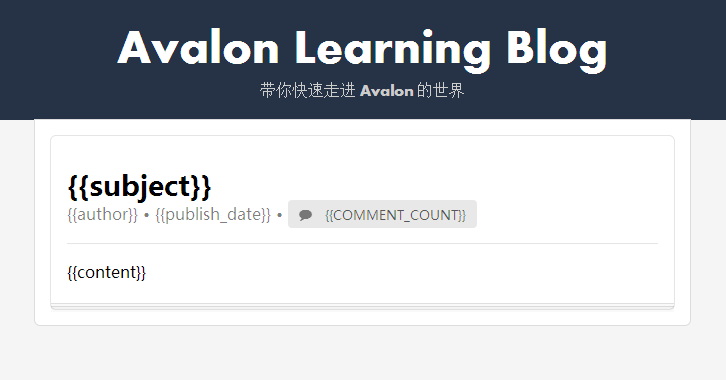

Blog 基本内容展示¶
MVVM 的一些思考¶
作为初学者，我们没必要对于MVVM的概念刨根问底，不过我们需要知道它的大概工作方式 或原理。在接触 Avalon 之前可能很多人已经用过象 jquery 这样的ajax库，所以可能更习 惯所有的事情都由你来控制，比如：在向后台请求数据之后，调用 jquery 的插件或手工 通过 javascript 来处理数据，在DOM上添加或修改相应的元素，以实现数据的展示。
但是使用了 Avalon 这样的 MVVM 库之后，事情改变了，展示和数据加工可以很好的分离， Model 负责数据的加工，DOM模板（即 ms-controller, ms- 这样的属性）负责展示， 而数据和模板之间的动态更新，以至于同步，完全由 Avalon 这样的库来自动处理了（当然 特殊情况下要手工触发）。
并且展示与 DOM 完美的结合，通过设置不同的 ms- 属性来实现如：数据显示、事件响应、 属性变化、CSS的修改、引入其它的模板、调用UI组件、动画等功能，基本上几乎所有与UI 相关的处理都可以使用 avalon 来支持。
不过，因为具体的渲染过程不再受你的控制，所以也带来一定的理解或处理上的困难，比如：
- 什么时候，相关数据的渲染完成？因为你可能需要在 DOM 都处理好之后再做一些加工
- 如何做一些初始化的工作？
- 其它与时序相关的处理
不过凡事有弊有利（当然上面的问题也不是没有解决办法，也许不太完美，但是可以不断改 进），这种机制带来的好处我认为有：
- 不同的处理关注的重点更清晰，更易于维护
- 可以极大的减少代码量
- 方便提升页面的动态和交互能力，有利于用户体验的实现
前面讲了一些有关 MVVM 的一些基本的原理（当然还不具体），不易理解的地方以及我认为 它的一些优势。
下面让我们来看一个具体的问题。
问题设计¶
比如我有一篇博客要展示它的基本内容，基本内容可能包括：
- 标题 - subject
- 内容 - content
- 作者 - author
- 日期 - publish_date
- 评论数 - comment_count
那么使用 Avalon 如何在页面上展示它呢？
页面设计¶
先让我们抛开 Avalon ，把博客展示页面先设计出来，因为只是展示，所以不会太复杂。
先让我们看一下设计好的页面效果：

这里 {{}} 的内容将是我们要进行替換的地方。整个布局是使用了 semantic-ui 这个 CSS 框架，样子还是比较好看的。具体的CSS样式不再说明了，只看一下整个页面的代码。
<!doctype html>
<html>
<head>
<meta http-equiv="Content-type" content="text/html; charset=utf-8" />
<script type="text/javascript" src="jquery-1.10.2.min.js"></script>
<link rel="stylesheet" type="text/css" href="../zh_CN/static/semantic/css/semantic.min.css"/>
<script type="text/javascript" src="../zh_CN/static/semantic/javascript/semantic.min.js"></script>
<link rel="stylesheet" type="text/css" href="blog.css"/>
<title>Avalon Learning Blog</title>
</head>
<body>
<!-- HEADER -->
<div class="head">
<h1 class="ui header">Avalon Learning Blog
<div class="sub header">带你快速走进 Avalon 的世界</div>
</h1>
</div>
<!-- Blog正文 -->
<div class="ui attached bottom segment" id="blogs">
<div class="ui stacked segment blog">
<div class="blog-body">
<h2 class="ui header">
<div class="content">
{{subject}}
<div class="sub header">{{author}} • {{publish_date}} • <span class="ui label"><i class="comment icon"></i> {{comment_count}}</span></div>
</div>
</h2>
<div class="ui divider"></div>
<div class="blog-content">{{content}}</div>
</div>
</div>
</body>
</html>这个页面没有特别需要讲解的，因为没有一点用到 Avalon 的东西。现在就让我一点点添加 相应的内容。
使用 Avalon 来处理页面¶
引入 avalon.js¶
在 <head> 的最下面添加
<script src="avalon.js"></script>定义 controller¶
在 <div id="blogs"> 上添加 ms-controller="blog" ，这样我们就定义了一个控制 器，名字为 blog 。
编写 Model¶
...
<script>
avalon.define("blog", function(vm){
vm.subject = "Blog Title";
vm.author = "张三";
vm.publish_date = new Date('2014/3/15');
vm.comment_count = 0;
vm.content = "<h2>这是一个测试的博客</h2>" +
"<p>这是内容 1</p>" +
"<p>这是内容 2</p>" +
"<p>这是内容 3</p>" +
"<p>这是内容 4</p>"
;
});
</script>
...其实很简单，只是在 vm 上定义了一些属性，与DOM中的插值表达式的变量对应。
查看效果¶

不过，你可能看到，日期和内容显示的地方都不是我们想要的，日期显示我希望是 yyyy-mm-dd 。 而内容中，因为有 HTML 的标签也被转义了，我希望不被转义。
如何处理，我们将在下一章节学习。
调整 vm 结构¶
上面的代码我们使用了简单的方式，直接在 vm 上绑定属性。现在我们改为 object 的 定义形式（类似于 Hash 对象）。
...
<script>
avalon.define("blog", function(vm){
vm.blog = {subject: "Blog Title",
author: "张三",
publish_date: new Date('2014/3/15'),
comment_count: 0,
content: "<h2>这是一个测试的博客</h2>" +
"<p>这是内容 1</p>" +
"<p>这是内容 2</p>" +
"<p>这是内容 3</p>" +
"<p>这是内容 4</p>"
}
});
</script>
...然后修改 DOM 中的插值表达式相应的变量前添加 blog. 。
可以看到， Avalon 中可以使用复杂的对象结构。